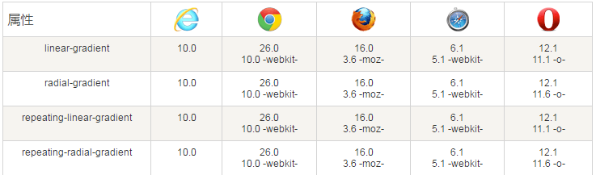

CSS3 渐变（gradients）可以让你在两个或多个指定的颜色之间显示平稳的过渡。浏览器支持
以前，你必须使用图像来实现这些效果。但是，通过使用 CSS3 渐变（gradients），你可以减少下载的事件和宽带的使用。此外，渐变效果的元素在放大时看起来效果更好，因为渐变（gradient）是由浏览器生成的。
CSS3 定义了两种类型的渐变（gradients）：
线性渐变（Linear Gradients）- 向下/向上/向左/向右/对角方向
径向渐变（Radial Gradients）- 由它们的中心定义
表中的数字指定了完全支持该属性的第一个浏览器版本。后边跟 -webkit-、-moz- 或 -o- 的数字指定了需加上前缀才能支持属性的第一个版本。

二、线性渐变
为了创建一个线性渐变，你必须至少定义两种颜色结点。颜色结点即你想要呈现平稳过渡的颜色。同时，你也可以设置一个起点和一个方向（或一个角度）。
线性渐变 - 从上到下（默认情况下）
下面的实例演示了从顶部开始的线性渐变。起点是红色，慢慢过渡到蓝色：
#grad {
background: -webkit-linear-gradient(red, blue); /* Safari 5.1 - 6.0 */
background: -o-linear-gradient(red, blue); /* Opera 11.1 - 12.0 */
background: -moz-linear-gradient(red, blue); /* Firefox 3.6 - 15 */
background: linear-gradient(red, blue); /* 标准的语法 */
}
线性渐变 - 从左到右
下面的实例演示了从左边开始的线性渐变。起点是红色，慢慢过渡到蓝色：
#grad {
background: -webkit-linear-gradient(left, red , blue); /* Safari 5.1 - 6.0 */
background: -o-linear-gradient(left, red, blue); /* Opera 11.1 - 12.0 */
background: -moz-linear-gradient(left, red, blue); /* Firefox 3.6 - 15 */
background: linear-gradient(to right, red , blue); /* 标准的语法 */
}
线性渐变 - 对角
你可以通过指定水平和垂直的起始位置来制作一个对角渐变。
下面的实例演示了从左上角开始（到右下角）的线性渐变。起点是红色，慢慢过渡到蓝色：#grad {
background: -webkit-linear-gradient(left top, red , blue); /* Safari 5.1 - 6.0 */
background: -o-linear-gradient(left top, red, blue); /* Opera 11.1 - 12.0 */
background: -moz-linear-gradient(left top, red, blue); /* Firefox 3.6 - 15 */
background: linear-gradient(to bottom right, red , blue); /* 标准的语法 */
}
带有指定的角度的线性渐变：
#grad {
background: -webkit-linear-gradient(180deg, red, blue); /* Safari 5.1 - 6.0 */
background: -o-linear-gradient(180deg, red, blue); /* Opera 11.1 - 12.0 */
background: -moz-linear-gradient(180deg, red, blue); /* Firefox 3.6 - 15 */
background: linear-gradient(180deg, red, blue); /* 标准的语法 */
}
CSS的重复渐变
线性渐变和径向渐变都属于CSS背景属性中的背景图片（background-image）属性。幸运的是，CSS3通过repeating-linear-gradient和repeating-radial-gradient语法提供了补救方法，可以直接实现重复的渐变效果。
A、重复的线性渐变 repeating-linear-gradient() 函数用于重复线性渐变：
#grad {
/* Safari 5.1 - 6.0 */
background: -webkit-repeating-linear-gradient(red, yellow 10%, green 20%);
/* Opera 11.1 - 12.0 */
background: -o-repeating-linear-gradient(red, yellow 10%, green 20%);
/* Firefox 3.6 - 15 */
background: -moz-repeating-linear-gradient(red, yellow 10%, green 20%);
/* 标准的语法 */
background: repeating-linear-gradient(red, yellow 10%, green 20%);
}B、重复的径向渐变 repeating-linear-gradient函数用于重复径向渐变：
三、径向渐变
CSS3 径向渐变径向渐变由它的中心定义。
为了创建一个径向渐变，你也必须至少定义两种颜色结点。颜色结点即你想要呈现平稳过渡的颜色。同时，你也可以指定渐变的中心、形状（原型或椭圆形）、大小。默认情况下，渐变的中心是 center（表示在中心点），渐变的形状是 ellipse（表示椭圆形），渐变的大小是 farthest-corner（表示到最远的角落）。
径向渐变 - 颜色结点均匀分布（默认情况下）
#grad {
background: -webkit-radial-gradient(red, green, blue); /* Safari 5.1 - 6.0 */
background: -o-radial-gradient(red, green, blue); /* Opera 11.6 - 12.0 */
background: -moz-radial-gradient(red, green, blue); /* Firefox 3.6 - 15 */
background: radial-gradient(red, green, blue); /* 标准的语法 */
}
径向渐变 - 颜色结点不均匀分布
#grad {
background: -webkit-radial-gradient(red 5%, green 15%, blue 60%);
/* Safari 5.1 - 6.0 */
background: -o-radial-gradient(red 5%, green 15%, blue 60%);
/* Opera 11.6 - 12.0 */
background: -moz-radial-gradient(red 5%, green 15%, blue 60%);
/* Firefox 3.6 - 15 */
background: radial-gradient(red 5%, green 15%, blue 60%);
/* 标准的语法 */
}
设置形状
shape 参数定义了形状。它可以是值 circle 或 ellipse。其中，circle 表示圆形，ellipse 表示椭圆形。默认值是 ellipse。
形状为圆形的径向渐变：
#grad {
background: -webkit-radial-gradient(circle, red, yellow, green); /* Safari 5.1 - 6.0 */
background: -o-radial-gradient(circle, red, yellow, green); /* Opera 11.6 - 12.0 */
background: -moz-radial-gradient(circle, red, yellow, green); /* Firefox 3.6 - 15 */
background: radial-gradient(circle, red, yellow, green); /* 标准的语法 */
}
不同尺寸大小关键字的使用
size 参数定义了渐变的大小。它可以是以下四个值：
closest-side：最近边，指定径向渐变的半径长度为从圆心到离圆心最近的边。
closest-corner：最近角，指定径向渐变的半径长度为从圆心到离圆心最近的角。
farthest-side：最远边，指定径向渐变的半径长度为从圆心到离圆心最远的边。
farthest-corner：最远角，指定径向渐变的半径长度为从圆心到离圆心最远的角。
background-image: -webkit-radial-gradient(closest-side circle at 50% 75%, rgb(220, 75, 200),rgb(0, 0, 75));
background-image: -moz-radial-gradient(closest-side circle at 50% 75%, rgb(220, 75, 200),rgb(0, 0, 75));
background-image: -o-radial-gradient(closest-side circle at 50% 75%, rgb(220, 75, 200),rgb(0, 0, 75));
background-image: radial-gradient(closest-side circle at 50% 75%, rgb(220, 75, 200),rgb(0, 0, 75));

四、模糊
-webkit-filter: blur(10px);
-moz-filter: blur(10px);
-ms-filter: blur(10px);
filter: blur(10px);
filter: progid:DXImageTransform.Microsoft.Blur(PixelRadius=10, MakeShadow=false); /* IE6~IE9 */
五、倒影：（只有webkit内核支持，目前仅在Chrome、Safari和Opera浏览器下支持）
语法：box-reflect：none | <direction> <offset>? <mask-box-image>?none:此值为box-reflect默认值，表示无倒影效果；
<direction>:此值表示box-reflect生成倒影的方向，主要包括以下几个值：
above:表示生成的倒影在对象（原图）的上方；
below:表示生成的倒影在对象（原图）的下方；
left:表示生成的倒影在对象(原图)的左侧；
right:表示生成的倒影在对象(原图)的右侧；
<offset>:用来设置生成倒影与对象（原图）之间的间距，其取值可以是固定的像素值，也可以是百分比值，如：
:使用长度值来设置生成的倒影与原图之间的间距，只要是CSS中的长度单位都可以，此值可以使用负值；
:使用百分比来设置生成的倒影与原图之间的间距，此值也可以使用负值
<mask-box-image>:用来设置倒影的遮罩效果，可以是背景图片，也可以是渐变生成的背景图像。
注意：
1、只能使用线性渐变给生成的倒影添加遮罩效果，而径向渐变到目前还无任何效果。另外有一点特别需要提醒大家，给生成的倒影添加遮罩效果的时候，如果没有设置显式的间距<offset>将会让box-reflect失效。也就是说，当box-reflect属性中的<mask-box-image>属性值出现时，必须显式的设置<offset>值，如果不需要间距，将其设置为0。
-webkit-box-reflect: below 0 -webkit-linear-gradient(red,rgba(250,250,250,0),rgba(250,250,250,.0) 30%,rgba(250,250,250,0.3));
2、用于遮罩的图片必须是png格式图片
-webkit-box-reflect:below 0 url(images/345.png);
六、Transition（过渡）
CSS3属性中有关于制作动画的三个属性： Transform（转换）,Transition（过渡）,Animation（动画）； Transform---->旋转rotate、扭曲skew、缩放scale和移动translate Transition-->transition-property,变换延续的时间：transition-duration,在延续时间段，变换的速率变化transition-timing-function,变换延迟时间transition-delay Animation-->在这个动画之前，先看Keyframes关键帧，支持animation动画的只有webkit内核的浏览器transition 添加过渡属性后，当css样式的数值发生改变时会通过动画过渡到设置的数值。
transition-property 需要过渡的样式 （all || [attr] || none）默认是 all
transition-duration 运动时间 默认是 0 s
transition-delay 延迟时间 默认是 0
transition-timing-function 运动形式 默认是 ease
ease：（逐渐变慢）
linear：（匀速）
ease-in：(加速)
ease-out：（减速）
ease-in-out：（先加速后减速）
cubic-bezier 贝塞尔曲线（ x1, y1, x2, y2 ）http:cubic-bezier.com
steps 实现一个关键逐帧动画的功能
七、CSS3 2D转换
1、translate ()根据左(X轴)和顶部(Y轴)位置给定的参数，从当前元素位置移动。translate是一种方法，将元素向指定的方向移动，类似于position中的relative。可以简单的理解为，使用translate()函数，你可以把元素从原来的位置移动，而不影响在X、Y轴上任何组件。2、rotate() 在一个给定度数顺时针旋转的元素。负值是允许的，这样是元素逆时针旋转。
缩放scale()函数让元素根据中心原点对对象进行缩放。默认的值1。因此0.01到0.99之间的任何值，使一个元素缩小；而任何大于或等于1.01的值，让元素显得更大。3、 scale()该元素增加或减少的大小，取决于宽度（X轴）和高度（Y轴）的参数：
在scale()函数中，取值除了可以取正值之外，同时还可以取负值。只不过取负值时，会先让元素进行翻转，然后在进行缩放。 可以通过transform-origin来改变元素的基点。
4、改变元素基点的transform-origin旋转rotate()函数通过指定的角度参数对元素根据对象原点指定一个2D旋转。它主要在二维空间内进行操作，接受一个角度值，用来指定旋转的幅度。如果这个值为正值，元素相对原点中心顺时针旋转；如果这个值为负值，元素相对原点中心逆时针旋转。
取值可以是正的，也可以是负的。如果取值为正值时，元素默认之下相对元素中心点顺时针旋转；如果取值为负值时，元素默认之下相对元素中心点逆时针旋转。
transform-origin这个东东，他的主要作用就是让我们在进行transform动作之前可以改变元素的基点位置，因为我们元素默认基点就是其中心位置，换句话说我们没有使用transform-origin改变元素基点位置的情况下，transform进行的rotate,translate,scale,skew,matrix等操作都是以元素自己中心位置进行变化的。但有时候我们需要在不同的位置对元素进行这些操作，那么我们就可以使用transform-origin来对元素进行基点位置改变，使元素基点不在是中心位置，以达到你需要的基点位置。5、 skew()该元素会根据横向（X轴）和垂直（Y轴）线参数给定角度：
transform-origin(X,Y):用来设置元素的运动的基点（参照点）。默认点是元素的中心点。其中X和Y的值可以是百分值,em,px，其中X也可以是字符参数值left,center,right；Y和X一样除了百分值外还可以设置字符值top,center,bottom，
倾斜skew()函数能够让元素倾斜显示。它可以将一个对象以其中心位置围绕着X轴和Y轴按照一定的角度倾斜。这与rotate()函数的旋转不同，rotate()函数只是旋转，而不会改变元素的形状。skew()函数不会旋转，而只会改变元素的形状。
关于CSS3 2D的兼容性
CSS3的2D变形到目前为止在主流浏览器中得到较好的支持.CSS3的2D变换虽然得到众多主流浏览器的支持，但在实际使用的时候需要添加浏览器各自的私有属性：
IE9中使用2D变形时，需要添加-ms-私有属性，在IE10+版本开始支持标准版本。
Firefox3.5至Firefox15.0版本需要添加-moz-的私有属性，在Firefox16+版本开始支持标准版本。
Chrome4.0+开始支持2D变形，在实际使用的时候需要添加-webkit-私有属性。
Safari3.1+开始支持2D变形，在实际使用的时候需要添加-webkit-私有属性。
Opera10.5+开始支持2D变形，在实际使用的时候需要添加-o-私有属性，但在Opera12.1版本不需要添加私有属性，不过在Opera15.0+版本需要添加私有属性-webkit-私有属性。
移动设备iOS Safari3.2+、Android Browser2.1+、Blackberry Browser7.0+、Opera Mobile14.0+、Chrome for Android25.0+需要添加私有属性-webkit-，而Opera Mobile11.0至Opera Mobile12.1和Firefox for Android19.0+不需要使用浏览器私有属性